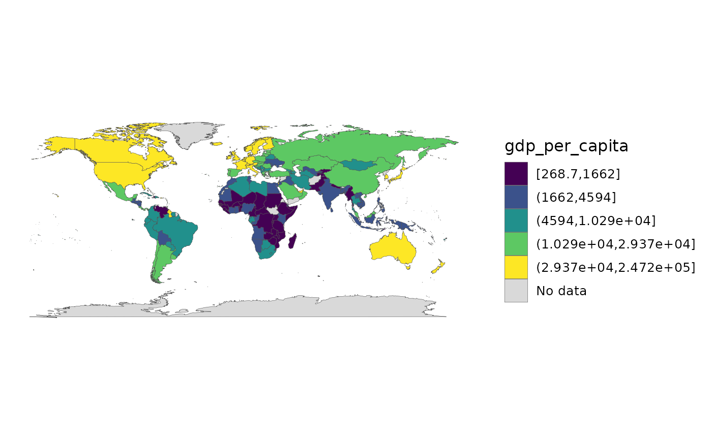

Encapsulates the choropleth boilerplate and goes beyond a single style.
Auto-detects the polygon vs sf backend, applies theme_world_map(), and –
for sf – a real projection via ggplot2::coord_sf(). Binned / quantile /
jenks styles are offered because a continuous fill on a skewed indicator
hides almost all the variation; binning is the honest default for
choropleths.
Usage
world_map(
data,
fill,
style = c("continuous", "binned", "quantile", "jenks", "categorical"),
projection = "equal_earth",
palette = NULL,
n_bins = 5,
borders = TRUE,
title = NULL,
legend = NULL,
na_label = "No data",
recenter = NULL,
na_style = c("grey", "hatched", "outline", "omit"),
footnote = NULL,
classification_report = FALSE,
uncertainty = NULL,
n_uncertainty = 3,
disputes = c("ignore", "mark"),
engine = c("ggplot2", "tmap")
)Arguments
- data
A map-ready frame from
world_data()/join_world()(polygon tibble orsf).- fill
The fill column (unquoted).
- style
"continuous"(default),"binned","quantile","jenks"or"categorical".- projection
For the
sfbackend, any of the projections inworld_geometry():"equal_earth"(default),"robinson","mollweide","natural_earth","plate_carree","mercator","winkel_tripel","eckert4","gall_peters","orthographic","azimuthal_equal_area","north_polar"or"south_polar".- palette
Optional palette name passed to the relevant
ggplot2scale.- n_bins
Number of bins for binned/quantile/jenks styles.
- borders
Draw country borders (default
TRUE).- title, legend
Optional plot title and legend title.
- na_label
Legend key label for missing data, used by the styles with a discrete legend (
"quantile","jenks","categorical"); the continuous and binned colourbars have noNAkey to name. Honoured by both engines. A length-1NAleaves the engine's own formatter alone.- recenter
Optional central meridian for the
sfbackend.- na_style
How to draw countries with no data:
"grey"(default),"hatched"(diagonal hatching via the optionalggpattern, unmistakable and greyscale-safe),"outline"(white fill, keeping only the border) or"omit"(do not draw them at all). See the section below.- footnote
Optional caption.
"auto"generates a coverage line ("174 of 195 countries shown; 21 missing"), so the map cannot quietly overstate what it covers. A string is used verbatim;NULL(default) adds nothing.- classification_report
If
TRUE, attach the breaks, the method and the count of countries per class to the returned plot as the"countryatlas_classification"attribute, and print them withmap_provenance(). A map whose top class holds one country and whose bottom holds ninety is misleading, and the counts say so immediately.style = "continuous"draws a colourbar and so has no classes to report: there the attribute isNULLand a warning says why.- uncertainty
Optional uncertainty column (unquoted) – a standard error, a confidence half-width, anything where larger means less certain. Supplying it switches the fill to a value-suppressing uncertainty palette (Correll, Moritz & Heer 2018): the value range contracts as uncertainty rises, so an uncertain estimate cannot claim an extreme colour, and the legend becomes the value x uncertainty grid.
- n_uncertainty
Number of uncertainty levels for the VSUP (default
3).- disputes
"ignore"(default) or"mark", which outlines the disputed_territories present in the data and notes the convention in the caption. Seedispute_policy().- engine
"ggplot2"(default) or"tmap". The package is ggplot2-native; thetmappath is an alternative renderer for people already working in tmap, and needs ansfframe. It honoursstyle,n_bins,palette,titleandlegend, and ignores the ggplot2-specific arguments.
Missing data is not zero
The default grey reads as "low" to many people, which is exactly wrong for
"unknown". na_style = "hatched" draws diagonal hatching instead –
unambiguous, and it survives greyscale printing. "omit" leaves a hole,
which is honest but can be mistaken for ocean. Whichever you pick,
footnote = "auto" states the count in words:
world_map(mapdf, gdp_per_capita, na_style = "hatched", footnote = "auto")coverage_map() goes further and maps availability itself.
Choosing a classification
The classification changes what readers conclude, and not by a little.
Brewer & Pickle's 56-subject study over nine map series found quantiles
among the best methods for general choropleth reading, and natural breaks
(Jenks) below 70% as accurate – the opposite of the common GIS default.
style = "quantile" is therefore the safe choice for a general audience.
Jenks earns its place on strongly clustered distributions, where quantiles
would split a natural group across two colours. Use classify_compare() to
see the difference on your own data before committing.
References
Brewer, C. A. & Pickle, L. (2002). Evaluation of methods for classifying epidemiological data on choropleth maps in series. Annals of the Association of American Geographers 92(4), 662-681. doi:10.1111/1467-8306.00310
Correll, M., Moritz, D. & Heer, J. (2018). Value-suppressing uncertainty palettes. Proceedings of the 2018 CHI Conference on Human Factors in Computing Systems, 1-11. doi:10.1145/3173574.3174216
Examples
# \donttest{
snap <- countryatlas::world_snapshot$countries
if (requireNamespace("maps", quietly = TRUE)) {
mapdf <- attach_geometry(snap, geometry = "polygon")
world_map(mapdf, gdp_per_capita, style = "quantile")
}

# }